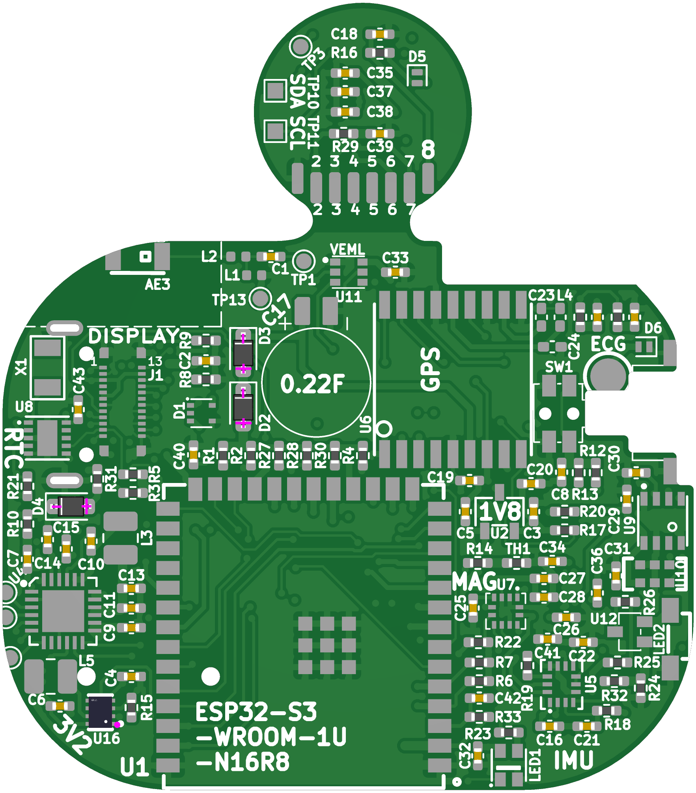

Fabrication and Assembly
First Run in Preparation
A finished Kompic̄ comes together in four stages — two at the manufacturer, two on the bench:
- Fabrication — the bare 4-layer PCB is produced from the Gerbers.
- Machine assembly — the economy PCBA service places the small passives.
- Reflow — the remaining top-side parts are hand-placed and hot-plate reflowed.
- Manual soldering — the underside components are soldered by hand.
The split is driven by cost and process limits:
- 4-layer, 1 mm. Four layers to route the density on a 44.5 × 50.62 mm outline; 1 mm to keep the case stack thin.
- Machine assembly is top-side and passives-only. One stencil, one pass, lowest cost.
- The costly and underside parts are placed by hand. Partly to keep a small prototype run affordable, partly because the underside cannot ride the hot plate.
Manufacturer Recommendation
The production files in the repository were generated by JLCPCB's tooling, and the author used JLCPCB and their economy PCBA out of familiarity. This is not an endorsement — any capable fabricator and assembler will do; choose one for your needs and regenerate the files for their workflow if required.
1 · Fabricating the Bare Board
The KiCad project and production files live in the repository under
hardware/Kompic_Mk1.
Upload the production set to the manufacturer's quote tool — three files do the work:
- the Gerber .zip — copper, mask, and silkscreen artwork,
- the BOM — the bill of materials for the assembled parts, and
- the placement file — the position and rotation of each assembled part.
Most fabrication settings stay at their defaults. Two were changed:
Non-default settings
Thickness → 1 mm (from the usual 1.6 mm). The watch has a tight thickness budget; a thinner board buys back room in the case stack.
Surface finish → lead-free HASL (from leaded). The same flat, solderable finish without the lead.
The board outline is 44.5 × 50.62 mm. Main and daughter board are panelized as a single 4-layer design on this one outline and routed apart after fabrication. Five sets were ordered for the first run.
Full fabrication settings used for this order
| Base material | FR-4 (TG135) |
| Layers | 4 |
| Dimension | 44.5 mm × 50.62 mm |
| PCB thickness | 1 mm (changed) |
| Surface finish | Lead-free HASL (changed) |
| Outer copper weight | 1 oz |
| Inner copper weight | 0.5 oz |
| PCB color | Green |
| Silkscreen | White |
| Via covering | Plugged |
| Min. via hole / diameter | 0.3 mm / 0.4–0.45 mm |
| Delivery format | Single PCB |
| PCB quantity | 5 |
| Electrical test | Flying-probe, full test |
| Board outline tolerance | ±0.2 mm |
| Appearance quality | IPC Class 2 |
2 · Machine Assembly (Economy PCBA)
With the bare boards ordered, the economy PCBA service machine-places the passives on the top side. The list below is taken from the project picking list and should be reconciled against the manufacturer's own PCBA export once that tool is available.
| Value | Designators | Qty | Notes |
|---|---|---|---|
| Capacitors (0402) | |||
| 1.0 pF | C1 | 1 | BLE antenna match |
| 47 pF C0G | C23 | 1 | |
| 100 pF | C18, C21 | 2 | |
| 10 nF X7R | C24 | 1 | |
| 100 nF | C8, C10, C16, C19, C20, C25, C26, C28–C33, C38–C45 | 21 | decoupling |
| 1 µF | C7, C15, C34, C36, C37 | 5 | |
| 4.7 µF | C4, C22, C27, C35 | 4 | |
| 10 µF | C2, C3, C5, C6, C9, C11, C13, C14 | 8 | |
| Resistors (0402) | |||
| 47 Ω | R23, R25, R26, R32 | 4 | |
| 470 Ω | R16, R18 | 2 | Qvar RC filters |
| 5.1 kΩ | R3, R5–R9, R12, R19, R21, R22, R29 | 11 | I²C / pull-ups |
| 10 kΩ | R1, R2, R4, R10, R11, R13, R14, R17, R20, R24, R27, R28, R30, R31, R33, R35, R36 | 17 | |
| 100 kΩ | R15 | 1 | TPS62840 VSET → 3.2 V |
| Inductors (0402 / 1008) | |||
| 2.7 nH | L1 | 1 | BLE match |
| 3.9 nH | L2 | 1 | BLE match |
| 27 nH | L4 | 1 | GPS bias-T |
| 2.2 µH (1008) | L3, L5 | 2 | BQ25619 & TPS62840 switchers |
| Diodes | |||
| 1N4148WS (SOD-323) | D2, D3, D4 | 3 | |
| ESDALCL5-1BM2 (SOD-882) | D5, D6 | 2 | 5 V TVS |
| Active / other | |||
| 10 kΩ NTC (0402) | TH1 | 1 | charger temp sense |
| TPS62840DLCR (VSON-8) | U16 | 1 | 3.3 V buck — see note |
Verify orientation and polarity of every part in the assembler's viewer before approving the order. The design-for-manufacturability pass catches a lot, but treat it as a safety net, not a substitute for the check.

A part on the wrong list
The TPS62840 buck (U16) was meant for the reflow tray but slipped into the machine-assembly BOM. Rather than re-spin the order, it was left in PCBA — the only correction needed was its placement orientation in the assembler's viewer before approval. Expect calls like this: a part goes out of stock, lands on the wrong list, or turns out cheaper to assemble than to hand-place, and you adjust the split accordingly.
3 · Reflow (Hand-Placed)
The remaining top-side parts — the module, sensors, connectors, and discretes — are placed by hand and hot-plate reflowed.
Why hand-place these
Hand-sourcing and reflowing the expensive parts keeps a prototype run affordable: roughly 50€ in parts for one or two watches, against 200€+ to fully assemble all five boards. Prove the design on a couple of units, then commit to a populated run.
| Designator | Part | Notes |
|---|---|---|
| Main-board ICs | ||
| U1 | ESP32-S3-WROOM-1U-N16R8 | MSL3 — bake if open >1 week |
| U2 | XC6206P182MR | 1.8 V LDO |
| U4 | BQ25619RTWR | charger + boost |
| U5 | LSM6DSV16XTR | IMU + Qvar ECG |
| U6 | MAX-M10S | GPS — second reflow pass, MSL3 |
| U7 | LIS3MDLTR | magnetometer |
| U8 | PCF85063ATL | RTC |
| U9 | BME688 | environmental |
| U10 | MSM261DGT003 | PDM MEMS mic |
| U11 | VEML6030 | ambient light |
| U12 | BSS138W | level-shift MOSFET |
| Daughter board | ||
| U13 | MAX30101EFD+T | optical HR / SpO&sub2; |
| U15 | TMP117AIDRVR | skin temperature |
| M1 | ELV1411A LRA | haptic motor, in pocket |
| Connectors & mechanical | ||
| USB1 | JS16T Type-C | |
| D1 | TPD2E001DRLR | USB data TVS |
| J1 | OK-F024-04 | 24-pin display BTB connector |
| J2, J3 | Inter-board connectors | main ↔ daughter |
| SW1 | SKSCLBE010 | tactile button |
| SW2 | EC05E1220401 | rotary encoder |
| CN1 | YZR0028 | Qvar pogo pin |
| CN2 | Qvar electrode | test point |
| RF & discrete | ||
| AE3 | 2450AT18A100E | BLE chip antenna |
| LED1 | WS2812B-2020 | addressable RGB |
| LED2 | TJ-S4008SW4 | flashlight LED |
| X1 | FC31M2 32.768 kHz | RTC crystal |
| C17 | 0.22 F supercap | GPS backup |
The hot-plate profile, the GPS module's second pass, and the MSL3 bake notes are in the Manual Assembly guide →
4 · Manual Soldering (Underside)
After reflow, the underside components go on by hand with an iron — they sit on the bottom of the boards and cannot face the hot plate.
| Designator | Part | Notes |
|---|---|---|
| Card1 | TF push SD socket | underside, main board |
| U14 | DRV2605LDGSR | haptic driver; underside, main board |
| AE1 | BWGNSCNX8-8W2 | GPS ceramic antenna |
| BT2 | ML651 | RTC backup cell |
Between the machine-placed passives, the reflow tray, and these underside parts, every component soldered to the boards is accounted for. The LiPo and case hardware are fitted during final assembly — covered, along with board stacking and the 12-conductor interconnect, in the Manual Assembly guide →